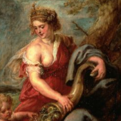

<!DOCTYPE html PUBLIC "-//W3C//DTD HTML 4.01//EN" "http://www.w3.org/TR/html4/strict.dtd">
<html><head>


  
  <meta content="text/html; charset=ISO-8859-1" http-equiv="content-type"><title>Panteon</title>
  

  
  
  <style type="text/css"></style></head><body style="background-color: rgb(165, 165, 141); color: rgb(0, 0, 0);" alink="#6666cc" link="white" vlink="#6666cc">
<table style="text-align: left; width: 1340px; height: 130px; background-color: rgb(51, 53, 51);" border="1" cellpadding="2" cellspacing="2">
<tbody><tr><td style="vertical-align: top;"><br>
      <br>
      <div style="text-align: center;"><big><big style="font-weight: bold; font-style: italic; font-family: Bookman Old Style; text-decoration: underline;"><big><br>
      <big>MITOLOGY CITY</big><small> </small></big></big></big><br>
      </div>
      <br>
      <br>
      </td></tr></tbody>
</table>
<div style="text-align: center; margin-top: 0px; height: 809px;"><div style="text-align: center;">
<div style="text-align: center;">
</div>
<div style="text-align: center;">
<table style="text-align: left; height: 30px; width: 1340px; background-color: rgb(51, 53, 51);" border="1" cellpadding="2" cellspacing="1">
  <tbody>
    <tr>
      <td style="vertical-align: top; width: 77px; text-align: left;"><span style="color: rgb(255, 255, 204);"><a href="PRINCIPAL.html">INICIO</a></span><br>
      </td>
      <td style="vertical-align: top; text-align: left;"><span style="color: rgb(255, 255, 204);"><a href="PRINCIPAL.html"> </a></span><a href="HISTORIA.html">HISTORIA</a><br>
      </td>
      
      <td style="vertical-align: top; text-align: left;">&nbsp; <a href="HEROES.html">HEROES&nbsp; </a><br>
      </td>
      <td style="vertical-align: top;"><a href="SEMIDIOSES.html">SEMIDIOSES</a><br>
      </td>
<td style="vertical-align: top;"><a href="GIGANTES.html">GIGANTES</a><br>
      </td>
      <td style="vertical-align: top; text-align: left;">&nbsp;
&nbsp;&nbsp; &nbsp; &nbsp;&nbsp; &nbsp;&nbsp;&nbsp; &nbsp; &nbsp;
&nbsp; <a target="_top" href="MITOLOGYCITY.html">MITOLOGY
CITY </a><a target="_top" href="MITOLOGYCITY.html">&nbsp;&nbsp; </a>&nbsp;&nbsp;&nbsp;&nbsp;
&nbsp; &nbsp; &nbsp;&nbsp; <br>
      </td>
      <td style="vertical-align: top; text-align: center;"><a href="GUERRAS.html">GUERRAS</a><br>
      </td>
      <td style="vertical-align: top; text-align: center;"><a href="DIOSES.html">DIOSES</a><br>
      </td>
      <td style="vertical-align: top; text-align: center;"><a href="TITANES.html">TITANES</a><br>
      </td>
      <td style="vertical-align: top;"><a href="Mitos%20Populares%20Griegos.html">MITOS POPULARES</a><br>
      </td>
      <td style="vertical-align: top;"><a href="MOUNTROS.html">MOUNSTROS</a><br>
      </td>
    </tr>
  </tbody>
</table>
</div>

<div style="text-align: center;"><br>
<br>
<div style="text-align: left;">
<div style="text-align: center;"><big style="font-family: Bodoni MT Black;"><big>
GE</big></big><big style="font-family: Bodoni MT Black;"><big>ONOLOGIA<span style="text-decoration: underline;"><span style="text-decoration: underline;"></span></span></big></big></div>
<big style="font-family: Bodoni MT Black;"><big><span style="text-decoration: underline;"></span></big></big></div>
</div>
<hr style="width: 100%; height: 2px;"><br>
<table style="text-align: left; width: 210px; height: 217px; margin-left: auto; margin-right: auto;" border="1" cellpadding="2" cellspacing="2">
  <tbody>
    <tr>
      <td style="vertical-align: top;"></td>
    </tr>
    <tr align="center">
      <td style="vertical-align: top;"><span style="font-family: Berlin Sans FB Demi;">CAOS</span><br>
      </td>
    </tr>
    <tr>
      <td style="vertical-align: top; text-align: center;">Caos, el
elemento original del universo, una realidad lóbrega que será
representada en las sucesivas genealogías como la fuente de buena parte
de todo lo que es oscuro y negativo en el mundo. </td>
    </tr>
  </tbody>
</table>
<br>
<table style="text-align: left; width: 350px; height: 301px; margin-left: auto; margin-right: auto;" border="1" cellpadding="2" cellspacing="2">
  <tbody>
    <tr align="right">
      <td style="vertical-align: top;"><br>
      </td>
      <td style="vertical-align: top;">&nbsp;&nbsp; </td>
    </tr>
    <tr align="right">
      <td style="vertical-align: top; text-align: center;"><span style="font-family: Bodoni MT; font-weight: bold;">URANO</span><br>
      </td>
      <td style="vertical-align: top; text-align: center;"><span style="font-weight: bold;">GEA</span><br>
      </td>
    </tr>
    <tr align="right">
      <td style="vertical-align: top; text-align: left;">
      <div style="text-align: center;"> </div>
      <p style="text-align: center;" class="MsoNormal"><span style="font-family: &quot;Bell MT&quot;,serif;" lang="ES-US"><span style="font-family: Bell MT;">Urano
fue el Padre Cielo, la antigua personificación griega de los cielos y,
por un
tiempo, el gobernante del universo conocido</span>. <o:p></o:p></span></p>
      </td>
      <td style="vertical-align: top; text-align: center;">
      <p class="MsoNormal"><span lang="ES-US">En la mitología griega,
Gea (o Gaia), el
primordial de la tierra o de la diosa madre fue una de las deidades que
rigen
el universo antes de que los Titanes existido.<o:p></o:p></span></p>
      </td>
    </tr>
  </tbody>
</table>
<br>
<br>
<br>
<div style="text-align: center;">
<table style="text-align: left; width: 605px; height: 454px; margin-left: auto; margin-right: auto;" border="1" cellpadding="2" cellspacing="2">
  <tbody>
    <tr align="right">
      <td style="vertical-align: top; text-align: center;"><br>
      </td>
      <td style="vertical-align: top;">
      
      <div style="text-align: center;"></div><div style="text-align: center;">&nbsp;&nbsp; </div>
      </td>
    </tr>
    <tr>
      <td style="vertical-align: top; text-align: center;"><span style="font-weight: bold;">CRONOS</span><br>
      </td>
      <td style="vertical-align: top; text-align: center;"><span style="font-weight: bold;">REA</span><br>
      </td>
    </tr>
    <tr>
      <td style="vertical-align: top;">
      <div style="text-align: center;"> </div>
      <p style="text-align: left;" class="MsoNormal"><span style="font-family: &quot;Bell MT&quot;,serif;" lang="ES-US"><span style="font-family: Bell MT;">Cronos
en la religión griega antigua, deidad masculina que era venerada por la
población prehelénica de Grecia, pero que probablemente no era muy
venerada por
los propios griegos; más tarde se identificó con el dios romano Saturno.</span><o:p></o:p></span></p>
      <div> </div>
      <p style="text-align: center;" class="MsoNormal"><span style="font-family: &quot;Bell MT&quot;,serif;" lang="ES-US"><o:p>&nbsp;</o:p></span></p>
      </td>
      <td style="vertical-align: top;"><span style="font-size: 12pt; line-height: 107%; font-family: &quot;Book Antiqua&quot;,serif;"><span style="font-family: Bell MT;">Es la diosa Titán de la fertilidad y
la maternidad. Es hija de Urano y Gaia, dos de los dioses primordiales
de la
mitología griega. Sin embargo, es más conocida por ser la esposa de
Cronos y la
madre de varios de los dioses y diosas olímpicos.&nbsp;</span></span><span style="color: rgb(34, 34, 34); font-family: Verdana,Geneva,sans-serif; font-size: 15px; font-style: normal; font-weight: 400; letter-spacing: normal; orphans: 2; text-align: justify; text-indent: 0px; text-transform: none; white-space: normal; widows: 2; word-spacing: 0px; background-color: rgb(255, 255, 255); display: inline ! important; float: none;"></span></td>
    </tr>
  </tbody>
</table>
</div>
<br>
<br>
<br>
<table style="text-align: left; width: 204px; height: 392px; margin-left: auto; margin-right: auto;" border="1" cellpadding="2" cellspacing="2">
  <tbody>
    <tr align="right">
      <td style="vertical-align: top;"><br>
      </td>
      <td style="vertical-align: top;"><br>
      </td>
      <td style="vertical-align: top;"><br>
      </td>
      <td style="vertical-align: top;"><br>
      </td>
      <td style="vertical-align: top;"><br>
      </td>
      <td style="vertical-align: top;"><br>
      </td>
      <td style="vertical-align: top;"><br>
      </td>
    </tr>
    <tr>
      <td style="vertical-align: top; text-align: center;">
      <big><big><span style="font-family: Bodoni MT; font-weight: bold;">POSEIDON</span></big></big></td>
      <td style="vertical-align: top;">
      <div style="text-align: center;"><big><big><span style="font-family: Bodoni MT; font-weight: bold;">HADES<br>
</span></big></big></div>
      </td>
      <td style="vertical-align: top; text-align: center;"><big><big style="text-decoration: underline;"><big><span style="font-family: Bodoni MT; font-weight: bold;">ZEUS</span></big></big></big><small>
      </small></td>
      <td style="vertical-align: top; text-align: center;"><big><big><span style="font-family: Bodoni MT; font-weight: bold;">HERA</span></big></big></td>
      <td style="vertical-align: top; text-align: center;"><big><big><span style="font-family: Bodoni MT; font-weight: bold;">HESTIA</span></big></big>
      </td>
      <td style="vertical-align: top; text-align: center;"><big><big><span style="font-family: Bodoni MT; font-weight: bold;">DEMETER</span></big></big><br>
      </td>
      <td style="vertical-align: top;"><br>
      </td>
    </tr>
    <tr>
      <td style="vertical-align: top;">&nbsp;Carro
de Poseidón, mosaico grecorromano, Museo Nacional del Bardo POSEIDON
fue el dios olímpico del mar, terremotos, inundaciones, sequías y
caballos. Fue representado como un hombre maduro con una constitución
robusta y una barba oscura que sostenía un tridente (una lanza de
pescador de tres puntas).<br>
      <br>
      <br>
      <br>
&nbsp; <br>
      <br>
      <br>
&nbsp;&nbsp;&nbsp;&nbsp;&nbsp; <br>
      </td>
      <td style="vertical-align: top;">El nombre del rey de los muertos
aparece en varias formas distintas; como <br>
Hades (H aides) en su forma conocida en dialecto ático, o como A ides o
Aidoneus (o como A ido y Aidi sólo en genitivo y dativo, probablemente
de *Ais) en <br>
la épica.<br>
      </td>
      <td style="vertical-align: top;"><small style="font-family: Book Antiqua;">ZEUS fue el Rey de los Dioses y el
dios del cielo, el clima , ley y orden, destino y destino, y realeza.<br>
Fue representado como un hombre regio y maduro con una figura robusta y
barba oscura. Sus atributos habituales eran un rayo, un cetro real y un
águila.</small><br>
      </td>
      <td style="vertical-align: top;">Hera
era, según algunos relatos, la hija mayor de Cronos y Rea, y una
hermana de Zeus. De acuerdo con los poemas homéricos ( Il. xiv. 201,
etc.), fue criada por Oceanus y Thetys, ya que Zeus había usurpado el
trono de Cronos; y luego se convirtió en la esposa de Zeus, sin el
conocimiento de sus padres. Este simple relato se modifica de manera
diversa en otras tradiciones.<br>
      </td>
      <td style="vertical-align: top;">Hestia fue el primer retoño de
Crono y Rea y también la última, puesto <br>
que fue la primera en ser devorada tras su nacimiento por su padre y la
última <br>
en ser expulsada.204 Como diosa del hogar (bestia ) y del lar, preside
el centro <br>
de la casa y también el hogar comunal de la ciudad. <br>
      </td>
      <td style="vertical-align: top;"><small><span style="font-family: Book Antiqua;">Deméter
era la hija de Crono y Rea, y hermana de Hestia, Hera, Edecanes,
Poseidón y Zeus. Al igual que los otros hijos de Cronos, fue devorada
por su padre, pero él la entregó nuevamente después de tomar el emético
que Metis le había dado. (Hesíodo. Theog. 452, &amp; c .; Apollod. I.
2. § 1.)</span></small><br>
      </td>
      <td style="vertical-align: top;"><br>
      </td>
    </tr>
  </tbody>
</table>
<br>
<br>
<table style="text-align: left; width: 408px; height: 392px; margin-left: auto; margin-right: auto;" border="1" cellpadding="2" cellspacing="2">
  <tbody>
    <tr>
      <td style="vertical-align: top;"><br>
      </td>
      <td style="vertical-align: top;"><br>
      </td>
      <td style="vertical-align: top;"><br>
      </td>
      <td style="vertical-align: top;"><br>
      </td>

      
      
      
    </tr>
    <tr>
      <td style="vertical-align: top;"><big><big><span style="font-family: Bodoni MT; font-weight: bold;">&nbsp;&nbsp;&nbsp;&nbsp; &nbsp; HEFESTO</span></big></big>
      </td>
      <td style="vertical-align: top; text-align: center;"><big><big><span style="font-family: Bodoni MT; font-weight: bold;">ARES</span></big></big>
      </td>
      <td style="vertical-align: top; text-align: center;"><big><big><span style="font-family: Bodoni MT; font-weight: bold;"></span></big></big> <big><big><span style="font-family: Bodoni MT; font-weight: bold;">HEBE</span></big></big></td>
      <td style="vertical-align: top;"><big><big><span style="font-family: Bodoni MT; font-weight: bold;">&nbsp;&nbsp;&nbsp;&nbsp; ILITIO</span></big></big>
      </td>

      
      
      
    </tr>
    <tr>
      <td style="vertical-align: top;">Como hijo de Hera, está sobradamente acreditado dentro del <br>
Olimpo. Aunque ella lo engendró como hijo de su matrimonio, lo alumbró
sin contacto sexual anterior con Zeus, por obra de un milagro en
respuesta <br>
airada al nacimiento de Atenea de la cabeza del gran dios.<br>
      </td>
      <td style="vertical-align: top;">Ares, dios de la guerra, tenía menos importancia de la que se podría esperar, 
fundamentalmente porque representaba los aspectos más brutales de lo bélico: la 
locura de la batalla, matanzas y contiendas que se entablan por el mero placer de 
la violencia. Parece que su nombre se originó como una antigua palabra que hacía&nbsp;
referencia a guerra o batalla, y podía virtualmente ser considerado como la belicosidad personificada. La
      </td>
      <td style="vertical-align: top;">Ella
era quien servía la bebida de los dioses en el Olimpo. También estaba
encargada de Bañar y vestir a su hermano Ares, a su vez, tenía la
obligación de ayudar a su madre a atar los caballos de su
carruaje.Durante el tiempo que fue la copera de los dioses, permaneció
virgen. Ya que era la hija favorita de Hera nunca nadie la pudo tocar.
Cuando Heracles murió y subió al Olimpo, se casó con esta y tuvieron
dos hijos: Alexiares y Aniceto. Estos permanecieron siendo niños para
siempre al ser hijos de la diosa de la juventud.<br>
      </td>
      <td style="vertical-align: top;">El nombre Ilitía se le da también como título a Hera y Ártemis, dos diosas <br>
principales vinculadas con el nacimiento de los niños. <br>
Aunque se presenta muchas veces a <br>
Ilitía como diosa propiciadora del parto, sus apariciones más significativas en <br>
el mito son dos historias en las que Hera pretende dificultar el nacimiento de <br>
hijos ilegítimos de Zeus.<br>
      </td>
</tr></tbody></table></div></div><br>

</body></html>